The classification and regression tree (CART) and Random Forest (RF)
are popular machine learning methods that involve selecting one
predictor at a time as the splitting variable for each node. The use
of linear combinations of predictors as splitting variables is one of
the popular extensions of CART and RF, known as Oblique Decision Trees
(ODT), and hence ODT-based Random Forests (ODRF). Recent studies have
also shown the theoretical advantages of ODT and ODRF over CART and
RF. However, there is still no integrated and efficient software
package that can demonstrate the numerical advantages of ODT and ODRF.
To fill this gap, we make several modifications to the existing
algorithms and develop an R package
ODRF for both ODT()
and ODRF(). In addition, the R package includes a series of new
functions, such as ODT-based boosting trees (BODT), the ensemble
version of BODT (ODBT), ODT visualization (plot.ODT), and an online
update function for ODT (online.ODT). The main part of ODRF is
executed using the Rcpp
package. This paper presents the basic idea of our modifications and
illustrates the use of the package. Through numerical experiments,
ODRF was compared with other packages of decision trees and forests,
showing a clear overall improvement in classification and regression
tasks.
The Classification and Regression Tree (CART) proposed by Professor Leo Breiman (Breiman et al. 1984) has attracted a great deal of attention from statisticians and data analysts of other disciplines. The method is widely used because it is easy to train and the resulting tree makes the analysis results easy to visualize and interpret (Johnson and Tong 2014). On the other hand, much attention has been paid to the algorithm and many improvements have been proposed. Classification and regression trees (Quinlan 1987, CART) and C4.5 (Quinlan 1993) are perhaps the most commonly used decision trees. There is a long list of other decision trees, including the Evolutionary Learning of Globally Optimal Classification and Regression Trees (Grubinger et al. 2014, EVT), Conditional Inference Trees (Hothorn et al. 2006, CT), Extremely randomized trees (Geurts et al. 2006, ERT), Model-Based Recursive Partitioning (Zeileis and Hothorn 2015, MOB), Bayesian additive regression trees (Maia et al. 2022(BART) ) and generalized linear mixed-model trees (Fokkema et al. 2020, glmertree). The Random Forests (Breiman 2001, RF), which is an ensemble of trees by either feature bagging or boosting, is arguably one of the most efficient machine learning methods, especially for the tabular data (Grinsztajn et al. 2022). Again, there are many ensemble methods that are based on different decision trees, for example, Conditional Random Forests (Hothorn et al. 2006, cforest), Learning Nonlinear Functions Using Regularized Greedy Forest (Johnson and Tong 2014, RGF) and Generalized Random Forest (Athey et al. 2019, GRF).
One of the most appealing extensions to CART is the use of linear combinations of the predictors as splitting variables that is known as the Oblique Decision Tree (Heath et al. 1993, ODT). Recently, Zhan et al. (2025) proved the consistency of ODT and its random forest (ODRF) for very general regression functions as long as they are continuous, while CART or RF are consistent mainly for regressions with special structures such as additive models. Again, ensemble can be made based on ODT, resulting in the Oblique-type Random Forests, including Random Rotation Random Forest (RotRF) of (Blaser and Fryzlewicz 2016), Random Projection Forests (RPFs) of Lee et al. (2015) and Sparse Projection Oblique Randomer Forests (SPORF) of (Tomita et al. 2020). Another type of random forests is the model-based oblique decision forest, including mainly Canonical Correlation Forests (CCF) with classic correlation analysis (Rainforth and Wood 2015), projection pursuit forest (PPF) with linear discriminant analysis (Silva et al. 2021), oblique random forests (ORF) with ridge regression (Menze et al. 2011), oblique random survival forests (Jaeger et al. 2022, ORSF) and Heterogeneous oblique random forest (Katuwal et al. 2020, HORF). However, a primary limitation of these oblique methods lies in their computational intensity. To address this issue, Wickramarachchi et al. (2016) introduced a novel algorithm named “HHCART”, which utilizes Householder matrices to reflect training data at non-terminal nodes. Subsequently, Wickramarachchi et al. (2019) developed an accompanying R package hhcartr for both classification and regression tasks.
In parallel with these developments, Gradient Boosting Trees (GBT) have emerged as another powerful machine learning paradigm. The GBT algorithm was first introduced by (Friedman 2001), establishing a powerful framework for supervised learning by sequentially fitting weak learners (typically decision trees) to the residuals of previous models. To address overfitting, (Friedman 2002) later proposed stochastic gradient boosting, which incorporates regularization by subsampling both observations and features. Further enhancements tailored to tree-based models were introduced through modern implementations such as XGBoost (Chen and Guestrin 2016), LightGBM (Ke et al. 2017), and CatBoost (Prokhorenkova et al. 2018). These frameworks optimize tree growth strategies, efficiently handle categorical variables, and significantly improve computational scalability. Traditionally, boosting algorithms employed axis-aligned splits (as in CART-style trees). However, recent research has explored Oblique Decision Trees (ODT) within boosting frameworks, resulting in Boosting Oblique Decision Trees (BODT). Integrating BODT with randomization techniques, such as random projections (Lee et al. 2015), further enhances robustness and generalizability. Notably, our recent work demonstrated that ensembles based on BODT achieve consistency for general continuous regression functions, in contrast to traditional CART-based ensembles that require additive or structured assumptions.
Although the theoretical advantages of oblique decision trees and their random forests have been well understood, the existing packages implementing those extensions only show their better numerical performance in some special cases, and thus have not commonly received and have not got much popularity as the methods deserve. As a consequence, the conventional packages rpart (Therneau and Atkinson 2022) of (Therneau and Atkinson 2000) for CART and randomForest (Liaw and Wiener 2002a) of (Liaw and Wiener 2002b) for RF are still the most commonly used packages. The main difficulty in implementing ODT or ODRF is the estimation of the coefficient, \(\theta\), for the linear combinations, which is also one of the main differences amongst all the existing packages. The estimation methods of \(\theta\) include random projection, logistic regression, dimension reduction and many others. For example, package rerf (Browne and Tomita 2019) of (Tomita et al. 2020) uses random projections; package PPforest (da Silva et al. 2025) of (Silva et al. 2021) uses linear discriminant and penalized discriminant analysis; package obliqueRF (Menze and Splitthoff 2012) of (Menze et al. 2011) uses the partial least squares regression, logistic regression, and random projection to find the projections. On the other hand, most of the existing R packages for such types of random forests can only be used for classification. Some of the R packages have been removed from the Comprehensive R Archive Network (CRAN) at https://CRAN.R-project.org/. For comprehensive details, see Table 1, which presents a comparative analysis of nine R packages implementing oblique tree methods. The evaluation assesses their support for six specific functionalities and determines whether they remain available on CRAN.
Our package, called ODRF, is written based on the above-mentioned packages and the recent work of Zhan et al. (2025). In ODRF, the projection pursuit regression (Friedman and Stuetzle 1981) is used to find \(\theta\); the details will be stated in the following section. Other options for the estimations of projections are also provided in the package. Compared with the existing random forests, the advantages of ODRF are as follows.
ODRF can be used for both classification and regression, while most existing packages of oblique-type trees or forests can only be used for classification.
Both the tree (ODT) and random forests (ODRF) of ODRF have
better overall accuracy than existing trees and forests, including
traditional CART and RF and other oblique trees or forests.
ODRF allows users to define their own functions to find the projections at each node, which is essential to the performance of the forests.
ODRF provides an online class of functions that facilitate the
application to streaming data, enabling continuous updates and
improvements to existing trees or random forests.
ODRF develops a new ensemble method (ODBT), which builds random forests of ODT-based boosting trees and outperforms traditional boosting trees and random forests in both classification and regression tasks.
ODRF proposes an innovative approach for constructing linear model trees by incorporating LASSO regularization, while distinctly separating the sets of variables used for node splitting and model fitting.
| Package | classification | regression | forests | boosting | custom splits | online updating | CRAN |
|---|---|---|---|---|---|---|---|
| oblique.tree | ✓ | ✗ | ✗ | ✗ | ✗ | ✗ | ✗ |
| pptreeviz | ✓ | ✗ | ✗ | ✗ | ✗ | ✗ | ✓ |
| PPtreereg | ✗ | ✓ | ✗ | ✗ | ✗ | ✗ | ✗ |
| rotationForest | ✓ | ✗ | ✓ | ✗ | ✗ | ✗ | ✓ |
| rerf | ✓ | ✗ | ✓ | ✗ | ✗ | ✗ | ✗ |
| PPforest | ✓ | ✗ | ✓ | ✗ | ✗ | ✗ | ✓ |
| obliqueRF | ✓ | ✗ | ✓ | ✗ | ✗ | ✗ | ✗ |
| aorsf | ✓ | ✓ | ✓ | ✗ | ✗ | ✗ | ✓ |
| ODRF | ✓ | ✓ | ✓ | ✓ | ✓ | ✓ | ✓ |
The remainder of this paper is organized as follows: Section 2 describes the model or methods of the main functions in ODRF. Section 3 provides the usage of the main functions in ODRF package. Section 4 showcases the specific application of ODRF to analyze two data sets with continuous and categorical responses respectively, and compares the predictive accuracy in classification and regression with other R packages using 43 datasets. A conclusion is made in Section 5.
Suppose \(Y = (y_1, ..., y_K)\) is the response vector of interest and \(X = (x_1, ..., x_p)^\top : p \times 1\) is the vector of predictors. We allow \(Y\) to be multiple to accommodate the categorical response. That is, if \(Y\) has \(K\) classes, then it is represented by \(K\) dummy variables, with each taking values 0 and 1. Generally, we need to estimate the regression functions: \[m(x) = (m_1(x), ..., m_K(x)) = (E(y_1|X=x), ..., E(y_K|X=x)).\]
With observations \(\mathbb{A}^0_0 = \{(X_i, Y_i), i = 1, ...., n \}\), where \(Y_i = (y_{i1}, ..., y_{iK})\) and \(X_i = (x_{i1}, ..., x_{ip})\), an ODT is illustrated by the following diagram in Figure 1. For ease of exposition, even if a node is not split further, we still rewrite it in the next layer (by a dashed line in the diagram). For any node \(\mathbb{A}_\ell^\tau\), where the subscript \(\ell\) represents the layer and superscript the number of nodes in the layer, the splitting is as follows. Given any \(p\)-dimensional vector \(\theta\) and a splitting value \(c\), define the daughter nodes by \[\mathbb{A}_{\ell+1}^{\tau'} = \{ X_i: X_i \in \mathbb{A}_{\ell}^\tau, \ \theta^\top X_i \le c\}, \quad \mathbb{A}_{\ell+1}^{\tau''} = \{ X_i: X_i \in \mathbb{A}_{\ell}^\tau, \ \theta^\top X_i > c\},\] and loss function \[\Delta(c| \mathbb{A}_\ell^\tau, \theta)= \sum_{k=1}^K \sum_{X_i \in \mathbb{A}_{\ell+1}^{\tau'}} (y_{ik} - \bar y_k(\mathbb{A}_{\ell+1}^{\tau'}))^2 + \sum_{k=1}^K \sum_{X_i \in \mathbb{A}_{\ell+1}^{\tau''}} (y_{ik} - \bar y_k(\mathbb{A}_{\ell+1}^{\tau''}))^2,\] where \(\bar y_k(\mathbb{A}) = \sum_{X_i \in \mathbb{A}} y_{ik} /\#\mathbb{A}\) and \(\#\mathbb{A}\) denotes the cardinality of set \(\mathbb{A}\). When \(\theta\) is given, the splitting value \(c\) should minimize \(\Delta(c|\theta, \mathbb{A}_\ell^\tau)\). If \(Y\) is a univariate quantitative response, then \(\Delta(c|\theta, \mathbb{A}_\ell^\tau)\) is the residual sum of squares for regression that is used as the criterion of CART. If \(Y\) is categorical, then \(\bar y_k(\mathbb{A}) = \hat p_k(\mathbb{A})\), the ratio of category \(k\) in \(\mathbb{A}_{\ell+1}^{\tau'}\), and \[\sum_{X_i \in \mathbb{A}} (y_{ik} - \bar y_k(\mathbb{A}))^2 = \#( \mathbb{A}) \times (1- \hat p_k(\mathbb{A})) \hat p_k(\mathbb{A}).\] Thus, \(\Delta(c|\theta, \mathbb{A}_\ell^\tau)\) is also the Gini impurity but multiplied by the number of observations in the node, which thus is also the criterion used by CART for classification.
To determine whether a split is necessary, the cross-validation (CV) method is used as follows. For any set \(\mathbb{A}\), the CV value is defined as a scaled residual sum of squares: \[CV(\mathbb{A}) = \Big(\frac{\#\mathbb{A}}{\#\mathbb{A} -\lambda}\Big)^2 \sum_{k=1}^K \sum_{X_i \in \mathbb{A}} ( y_{ik} - \bar y_k(\mathbb{A}))^2,\] Note that if \(\lambda = 1\), then \(CV(\mathbb{A})\) is the leave-one-out CV. We can show that \(\lambda = \log(\#\mathbb{A})\) also gives a consistent stopping time. In our package, if \[CV(\mathbb{A}_\ell^\tau ) \le CV(\mathbb{A}_{\ell+1}^{\tau'}) + CV(\mathbb{A}_{\ell+1}^{\tau''}),\] then \(\mathbb{A}_\ell^\tau\) is a leaf and no longer needs to be split; otherwise, it will be split to daughter nodes \(\mathbb{A}_{\ell+1}^{\tau'}\) and \(\mathbb{A}_{\ell+1}^{\tau''}\); see the first equation of this section.
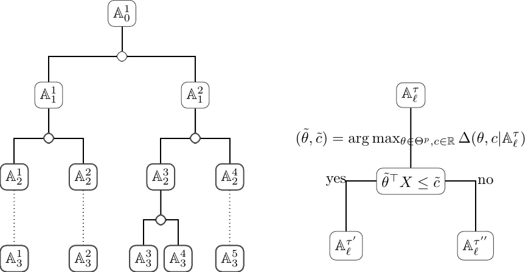
Let \(\{\mathbb{A}_L^j\}_{j=1}^{t_n}\) be all the leaves (i.e. the nodes in the last layer) of the generated tree. Then, \(m(x)\) is estimated by \[m_{n}(x)=\sum_{j=1}^{t_n}\mathbb{I}(x\in \mathbb{A}_L^j)\times (\bar y_1(\mathbb{A}_L^j), ..., \bar y_K(\mathbb{A}_L^j)).\] Note that if \(Y\) is categorical, \(m_{n}(x)\) is the vector of probabilities of each class.
It can be seen that the main step in ODT is the estimation of the projection \(\theta\), i.e. the coefficients of the linear combinations. Although many methods have been proposed as mentioned in the Introduction section, we find the projection pursuit regression (Friedman and Stuetzle 1981) is still the most efficient and is used in ODRF. The estimation is as follows. In any node \(\mathbb{A}_\ell^\tau\), define a loss function \[\Delta(\theta) = \sum_{k=1}^K \sum_{X_i \in \mathbb{A}_\ell^\tau} \Big\{y_{ik} - m_k(\theta^\top X_i)\Big\}^2,\] where \(m_k\) is a nonparametric smoothing of the regression function that minimizes \(\sum_{X_i \in \mathbb{A}_\ell^\tau} \Big\{y_{ik} - m_k(\theta^\top X_i)\Big\}^2\) with \(\theta\) given. The nonparametric smoothing can be either a spline representation, kernel smoothing, or a super smoother of Friedman (1984). Projection \(\theta\) is estimated as \[\theta = \arg \min_\theta \Delta(\theta).\] Our package also allows users to define their own methods of estimating \(\theta\); see Section 3.5.
ODRF builds the random forest slightly differently from the existing forests, but its basic idea is still the feature bagging (Ho 1998). The detail is as follows. Denote by \(X_{[q]} = (x_1', ..., x_q')\) a random subset of predictors \(X = (x_1, ..., x_p)\), where \(q < p\) and \(\{x_1', ..., x_q'\} \subset \{x_1, ..., x_p\}\), and thus by \(X_{[q], r},\ r=1, 2, ...,\) we mean a sequence of such subsets that may differ from one another. In other words, with the same \(q\) and \(r\), set \(X_{[q], r}\) changes from place to place but has the same cardinality. The ODRF is implemented as follows.
Create a random ODT tree, labeled as \(b\), using the idea of feature bagging as follows.
For each node \(\mathbb{A}_k^\tau\), randomly select \(q\), for example \(q = \lfloor p/3\rfloor\) or \(q = \lfloor\sqrt{p}\rfloor\), variables \(X_{[q], r} = (x_1', ..., x_q') \subset X\), where \(r = 1, ..., R\) denotes \(R\) random sets of variables. In ODRF, \(R \ge \lfloor p/q\rfloor\) is used as default.
For each \(X_{[q], r}\), find \[\tilde \theta_{r} = \arg \min_{\theta} \sum_{k=1}^K \sum_{X_i \in \mathbb{A}} \Big\{y_{ik} - m_k(\theta^\top X_{[q],r, i})\Big\}^2,\] where \(X_{[q],r, i} = (x_{i1}', ..., x_{iq}')^\top\).
Define \[\mathbb{A}_{k,r}^{\tau'} = \{ X_i: X_i \in \mathbb{A}_k^\tau, \ \theta_{(q)}^\top X_{[q],r, i} \le c_{(q)}\}, \quad \mathbb{A}_{k,r}^{\tau''} = \{ X_i: X_i \in \mathbb{A}_k^\tau, \ \theta_{(q)}^\top X_{[q],r, i} > c_{(q)}\}.\]
Calculate \[(\tilde c_{(q)}, \tilde r) = \arg \min_{c, r=1,..., R} \Big\{ \sum_{k=1}^K \sum_{X_i \in \mathbb{A}_{\ell,r}^{\tau'}} (y_{ik} - \bar y_{.k})^2 + \sum_{k=1}^K \sum_{X_i \in \mathbb{A}_{\ell, r}^{\tau''}} (y_{ik} - \bar y_{.k})^2\Big\}.\]
Split the node with \((\tilde \theta_{\tilde r}, \tilde c_{\tilde r}, \tilde r)\) to produce daughter nodes
\(\mathbb{A}_{\ell+1}^{\tau'} = \mathbb{A}_{\ell+1,\tilde r}^{\tau'}\) and \(\mathbb{A}_{\ell+1}^{\tau''} = \mathbb{A}_{\ell+1,\tilde r}^{\tau''}\).
If \(CV(\mathbb{A}_k^\tau) < CV(\mathbb{A}_{\ell+1}^{\tau'}) + CV(\mathbb{A}_{\ell+1}^{\tau''})\), we discard the two daughter nodes, and make \(\mathbb{A}_k^\tau\) as a leaf; otherwise, we continue to split the nodes.
Each tree produces one estimator \(\hat m^b (x) = (\hat m_{1}^b (x), ..., \hat m_{K}^b (x))\).
An Oblique Decision Random forest (ODRF) estimator is then \[\hat m_{ODRF}(x) = B^{-1} \sum_{b=1}^B \hat m_{n}^b (x).\]
Building upon the foundational gradient boosting framework established by Friedman (2001), the boosting process constructs trees sequentially. Specifically, the \(k\)-th tree is trained using the predictors and residuals derived from the previous \(k-1\) trees. Consequently, the estimator \(m^{(k)}(x)\) at step \(k\) is expressed as a linear combination of the first \(k\) trees. In this work, we propose using Oblique Decision Trees (ODT) as base learners within the boosting framework. The resulting ODT-based boosting algorithm (BODT) proceeds according to the following key steps:
Step 1. Initialize \(k=1\), training set \(\mathcal{D}_n^1 = \mathbb{A}^0_0\), residuals \(r_{0,i} = Y_i\) for \(i=1,\ldots,n\), and estimator \(m_{t,0}^r = 0\).
Step 2. Train the \(k\)-th ODT using data \(\mathcal{D}_n^k = \{(X_i, r_{k-1,i})\}_{i=1}^n\). Denote the resulting tree as \(m_{t,k}^r(x)\). (Note that for \(k=1\), \(m_{t,1}^r\) is simply the ODT trained on \(\mathcal{D}_n\).)
Step 3. Update the estimator of \(m(x)\) at step \(k\) by: \[\begin{equation} \label{eq:boost_estimator} m_{k,\text{boost}}(x) := \sum_{j=1}^k a_{k,j}^* m_{t,j}^r(x), \end{equation} \tag{1}\] where the coefficients \((a_{k,1}^*, a_{k,2}^*, \ldots, a_{k,k}^*)\) are obtained by solving: \[\begin{equation} \label{eq:boost_coef} (a_{k,1}^*,\ldots,a_{k,k}^*) := \mathop{\mathrm{arg\,min}}_{(a_{k,1},\ldots,a_{k,k}) \in \mathbb{R}^k} \sum_{i=1}^n \left(Y_i - \sum_{j=1}^k a_{k,j} m_{t,j}^r(X_i)\right)^2. \end{equation} \tag{2}\]
Step 4. Update the residuals as \(r_{k,i} = Y_i - m_{k,\text{boost}}(X_i)\) and the training data as \(\mathcal{D}_n^{k+1} = \{(X_i, r_{k,i})\}_{i=1}^n\).
Step 5. Set \(k \leftarrow k+1\) and return to Step 2.
To further improve the stability and predictive accuracy of the boosting trees, we incorporate a bagging step by replacing each deterministic ODT with a randomly constructed ODT. For simplicity, we set \(a_n = n\), meaning the full dataset \(\mathcal{D}_n\) is used at every boosting iteration. During the construction of each random ODT, independent random seeds (as defined at the beginning of Section 2.2) are employed. By a slight abuse of notation, we continue to denote the resulting estimator as \(m_{k,\text{boost}}(x)\). Running the BODT procedure independently \(B\) times, each with its own set of random ODTs, produces an ensemble estimator, referred to as ODBT, defined by \[m_{k,\text{boost}}^{\text{ens}}(x) := \frac{1}{B} \sum_{b=1}^B m_{k,\text{boost}}^{b}(x),\] where \(m_{k,\text{boost}}^{b}(x)\) corresponds to the boosting estimator from the \(b\)-th independent run.
For a comprehensive discussion of the technical details and theoretical properties of ODBT, we refer the reader to our parallel work.
The package allows for easy model updating (for ODT or ODRF) when new data is available. Essentially, we achieve this by splitting a leaf node upon the arrival of new data. The specifics of this process vary based on the amount of available data. To keep things simple, we focus on classification trees that use Gini impurity as the splitting criterion.
Suppose the trained ODT has leaves \(A_L^j, j = 1, ..., J\). When the new data comes, we can simply fit the new data into the leaves of the trained tree. Suppose \(D_L^j =\{ (X'_i, y'_i), i=1, ..., n'_j \}\) fall into \(A_L^j\), where \(y_i' = (y_{i,1}', ..., y'_{i,K})\), thus the data in the leaf becomes \(A_L^j \cup D_L^j\). Next, we discuss whether we need to split \(A_L^j \cup D_L^j\) in different scenarios of data availability.
If the full data for the original trained model is known, that is, the data in \(A_L^j \cup D_L^j\) is fully known, we can use the method of ODT to split the data.
If only the impurity is known, i.e. \(n_j = \# A_L^j\) and \((\hat p^j_{L,1}, ..., \hat p^j_{L,K})\) are kept for the leaf, which is indeed the case for many existing packages of trees. Here, \(\hat p^j_{L,k}\) is the probability of class \(k\) in the leaf \(A_L^j\). The impurity of \(A_L^j\) and \(A_L^j \cup D_L^j\) can be calculated respectively as \[G^j_L = \sum_{k=1}^K \hat p_k (1- \hat p_k)\] and \[\tilde G^j_L = \sum_{k=1}^K \tilde p_k (1- \tilde p_k),\] where \[\tilde p_k = (n_j \hat p^j_{L,k} + n_j' \check p^j_{L,k})/(n_j + n_j')\] and \(n_j' = \# D_L^j\) and \(\check p^j_{L,k} = \sum_{X_i' \in D_L^j} y'_{i, k}/n_j'\). If \(\hat G_L^j \le \tilde G_L^j\), we don’t need to split. Otherwise, we first split \(D_L^j\) in the same way as ODT does, and denote the daughter nodes by \(A_L^{j, l}\) and \(A_L^{j, r}\). We assume that the original data in the leaf are also proportionally split into the two daughter nodes. Thus, their impurities are \[G( A_\ell^{j, l}) = \sum_{k=1}^K \hat p_k^l (1- \hat p^l_k), \quad G( A_\ell^{j, r}) = \sum_{k=1}^K \hat p^r_k (1- \hat p^r_k),\] where \(n_j^l = \tau n_j + \# A_L^{j, l}\) and \(n_j^r = (1-\tau) n_j + \# A_L^{j, r}\), \(\hat p_k^l = (\tau n_j \hat p^j_{L,k} + \sum_{X'_i \in A_L^{j, l}} y_{i,k}')/ n_j^l)\) and \(\hat p_k^r = ((1-\tau) n_j \hat p^j_{L,k} + \sum_{X'_i \in A_L^{j, r}} y_{i,k}')/n_j^r\), and \(\tau = \# A_\ell^{j, l}/n_j'\). Following the same rule as ODT in the splitting, if \[\left(\frac{n_j+n_j'}{n_j+n_j' -\lambda}\right)^2(n_j+n_j')\tilde G_j \le \left(\frac{n_j^l}{n_j^l -\lambda}\right)^2 n_j^l G( A_\ell^{j, l}) + \left(\frac{ n_j^r}{ n_j^r -\lambda}\right)^2 n_j^r G( A_\ell^{j, r}),\] then we split the leaf, and continue to split its daughter nodes if necessary; otherwise, \(A_L^j\) is not split and remains as a leaf.
The above procedure is a combination of the batches of data in the leaves. In ODRF, the second scenario is used as we believe most trees have the data required.
ODRF is written in Rcpp (Eddelbuettel and François 2011) package and
functions of R’s S3, including the base R functions print(),
predict(), and plot() in the base package, the conversion function
as.party() in package
partykit (Hothorn and
Zeileis 2015). Next, we introduce the main functions of ODRF
package, including:
ODT() constructs a single oblique decision tree for classification
and regression tasks, where each node split is determined by a linear
combination of predictors. Returns an ODT S3 object compatible with
plot(), predict(), and print() methods.
ODRF() implements oblique random forest ensembles for classification
and regression, extending the random forest framework through
ODT-based construction while encompassing standard random forest as a
special case. Returns an ODRF S3 object and supports the
ODBT() implements boosted oblique trees by applying feature bagging
during ODT-based boosting training to ensemble multiple models. It
accepts training and test data sets as input and directly outputs
fitted values and predictions.
online() supports incremental learning scenarios and is applicable
to ODT and ODRF S3 objects.
VarImp() computes variable importance measures and is compatible
with ODT and ODRF S3 objects.
Finally, we demonstrate the implementation of user-defined projection estimation functions through customizable template components, enabling researchers to tailor hyperplane optimization strategies to specific problem domains.
ODT and ODRFODT(), ODRF(), and ODBT() are the three main functions of ODRF
package. They can be used for classification and regression and are
similar in usage to packages rpart and randomForest
respectively.
We provide two ways of data input following the S3 methods as follows.
## S3 method for class 'formula'
ODT(formula, data = NULL, split = "auto", NodeRotateFun = "RotMatPPO", ...)
ODRF(formula, data = NULL, split = "auto", NodeRotateFun = "RotMatPPO", ...)
ODBT(formula, data = NULL, Xnew = NULL, split = "auto", model = "ODT", ...)## Default S3 method:
ODT(X, y, split = "auto", NodeRotateFun = "RotMatPPO", ...)
ODRF(X, y, split = "auto", NodeRotateFun = "RotMatPPO", ...)
ODBT(X, y, Xnew, split = "auto", model = "ODT", ...)The formula and data are standard formats in R, so do the remaining
arguments such as subset, na.action, and weights. For additional
information on setting the values of arguments that are not introduced
here, please refer to the documentation for the functions ODT and
ODRF using commands ?ODT, ?ODRF, and ?ODBT. However, in most
cases, the default values work well.
print() can be used to display the trained tree and structure of each
node of ODT in detail. Here is one example.
set.seed(38)
data(iris, package = "datasets")
tree <- ODT(Species ~ ., data = iris)
print(tree)=============================================================
Oblique Classification Tree structure
=============================================================
1) root
node2)# proj1*X < 0.29 -(leaf1 = setosa)
node3) proj1*X >= 0.29
node4)# proj2*X < 0.88 -(leaf2 = versicolor)
node5)# proj2*X >= 0.88 -(leaf3 = virginica)party.tree <- as.party(tree, data = iris)
print(party.tree)Model formula:
Species ~ Sepal.Length + Sepal.Width + Petal.Length + Petal.Width
Fitted party:
[1] root
| [2] proj1*X >= 0.29167
| | [3] proj2*X >= 0.88395: virginica (n = 53, err = 5.7%)
| | [4] proj2*X < 0.88395: versicolor (n = 47, err = 0.0%)
| [5] proj1*X < 0.29167: setosa (n = 50, err = 0.0%)
Number of inner nodes: 2
Number of terminal nodes: 3In addition, we can also use function print() to print the model
fitted error for ODRF.
set.seed(38)
forest <- ODRF(Species ~ ., data = iris, parallel = FALSE)
print(forest)Call:
ODRF.formula(formula = Species ~ ., data = data, parallel = FALSE)
Type of oblique decision random forest: classification
Number of trees: 100
OOB estimate of error rate: 5.33\%
Confusion matrix:
setosa versicolor virginica class_error
setosa 50 0 0 0.0000000
versicolor 0 47 5 0.0961537
virginica 0 3 45 0.0625000Beyond its core functionality, the ODT implementation can also perform
linear model trees (LMT) with LASSO regularization as proposed by Craig
et al. (2024). This approach differs fundamentally from standard ODT in
its data partitioning: the splitting variables and linear modeling
variables are trained on distinct datasets. We demonstrate this
functionality through the following illustrative case, where we use “Z”
as the splitting variable to build a linear model tree for “X” and “y”.
set.seed(10); cutpoint <- 50; mu <- rep(0, 100)
X <- matrix(rnorm(100 * 10), 100, 10)
age <- sample(seq(20, 80), 100, replace = TRUE)
height <- sample(seq(50, 200), 100, replace = TRUE)
weight <- sample(seq(5, 150), 100, replace = TRUE)
Z <- cbind(age = age, height = height, weight = weight)
mu[age <= cutpoint] <- X[age <= cutpoint, 1] + X[age <= cutpoint, 2]
mu[age > cutpoint] <- X[age > cutpoint, 1] + X[age > cutpoint, 3]
y <- mu + rnorm(100)
my.tree <- ODT(X = X, y = y, Xsplit = Z, split = "linear", lambda = 0, NodeRotateFun =
"RotMatRF", glmnetParList = list(lambda = 0, family = "gaussian"))
pred <- predict(my.tree, X, Xsplit = Z)
mean((pred - y)^2)
[1] 0.9035932ODT(), ODRF(), and ODBT()predict() is the standard S3 method to predict new data for various
objects of classes. We defined the functions predict.ODT() and
predict.ODRF() to predict Xnew for classes ODT() and ODRF()
respectively. The default output of predict() is response which is
the predicted values of the new data. Use ?predict.ODT and
?predict.ODRF to see the detail of the prediction.
The standard usage is as follows.
## S3 method for class 'ODT'
predict(object, Xnew, ...)
## S3 method for class 'ODRF'
predict(object, Xnew, type = "response", ...)Examples of classification and regression using ODT(), ODRF(), and
ODBT() are as follows.
data(body_fat, package = "ODRF")
train <- sample(1:252, 200)
bodyfat_train <- data.frame(body_fat[train, ])
bodyfat_test <- data.frame(body_fat[-train, ])
tree <- ODT(Density ~ ., bodyfat_train, split = "mse")
pred <- predict(tree, bodyfat_test[, -1])
(e.tree <- mean((pred - bodyfat_test[, 1])^2))
[1] 4.775053e-05set.seed(12)
data(seeds, package = "ODRF")
train <- sample(1:209, 150)
seeds_train <- data.frame(seeds[train, ])
seeds_test <- data.frame(seeds[-train, ])
forest <- ODRF(varieties_of_wheat ~ ., seeds_train, split = "gini", parallel = FALSE)
pred <- predict(forest, seeds_test[, -8])
(e.forest <- mean(pred != seeds_test[, 8]))
[1] 0.01694915forest <- ODBT(varieties_of_wheat ~ ., seeds_train, seeds_test[, -8], model = "rpart",
type = "class", max.terms = 10, parallel = FALSE, NodeRotateFun = "RotMatRF")
pred <- forest$results$prediction
(mean(pred != seeds_test[, 8]))
[1] 0.01694915ODRF provides online training for sequential data with function
online() and update existing ODT and ODRF using batches of data.
The usage is as follows.
## S3 method for class 'ODT' and 'ODRF'
online(obj, X = NULL, y = NULL, ...)In the following example, the training data are available in two
batches. The first batch is used to train ODT and ODRF, and the
second batch is used to update the trained model.
set.seed(17)
index <- sample(nrow(seeds_train), floor(nrow(seeds_train) / 2))
forest1 <- ODRF(varieties_of_wheat ~ ., seeds_train[index, ], split = "gini",
parallel = FALSE)
pred <- predict(forest1, seeds_test[, -8])
(e.forest.1 <- mean(pred != seeds_test[, 8]))[1] 0.03389831forest2 <- online(forest1, seeds_train[-index, -8], seeds_train[-index, 8])
pred <- predict(forest2, seeds_test[, -8])
(e.forest.online <- mean(pred != seeds_test[, 8]))[1] 0.01694915index <- seq(floor(nrow(bodyfat_train) / 2))
tree1 <- ODT(Density ~ ., bodyfat_train[index, ], split = "mse")
pred <- predict(tree1, bodyfat_test[, -1])
(e.tree.1 <- mean((pred - bodyfat_test[, 1])^2))[1] 6.37745e-05tree2 <- online(tree1, bodyfat_train[-index, -1], bodyfat_train[-index, 1])
pred <- predict(tree2, bodyfat_test[, -1])
(e.tree.online <- mean((pred - bodyfat_test[, 1])^2))[1] 5.659303e-05It can be seen that the errors after updating are notably smaller than those resulting from using a single batch of data alone.
ODT and ODRF and importance of variablesODRF provides several plot functions to visualize ODT and ODRF.
plot.ODT() plots the oblique decision tree structure based on package
PPtreeViz. We can convert the class ODT to class party by
as.party() and then use plot() to draw the tree structure.
Suppose x or obj is an object of class ODT. The standard usage is as follows.
## S3 method for class 'ODT'
plot(x, font.size = 17, width.size = 1, ...)
## S3 method for class 'ODT'
as.party(obj, data, ...)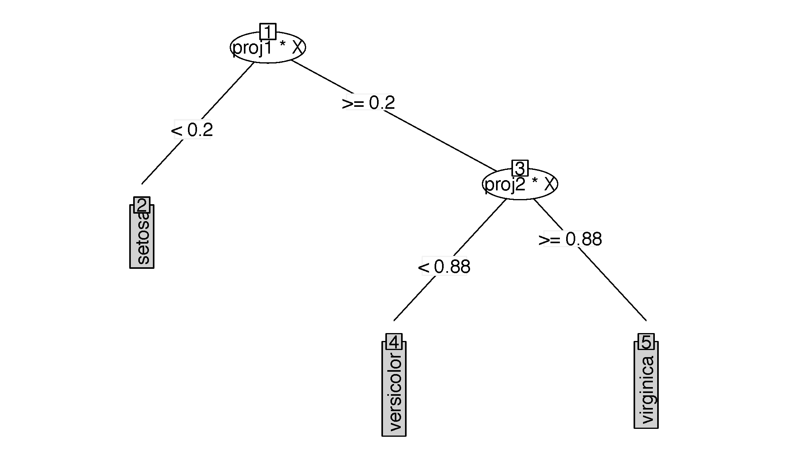
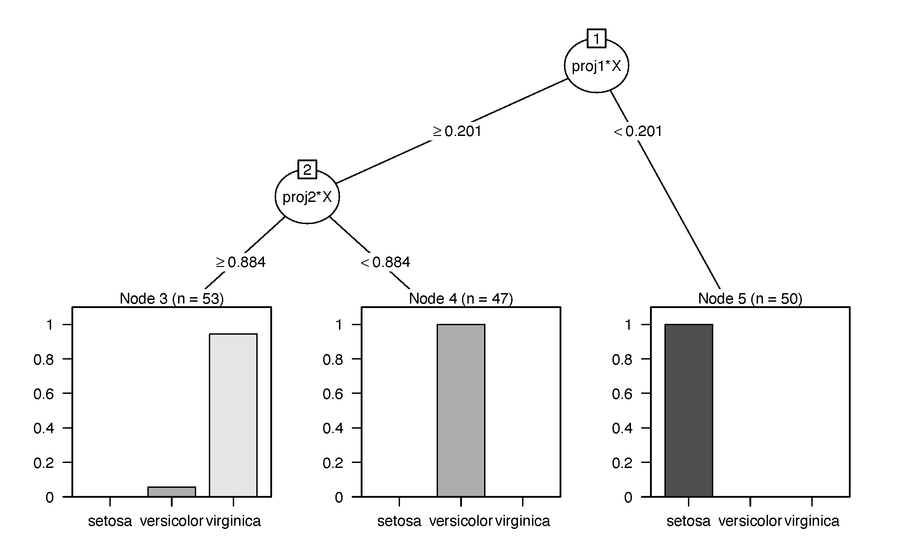
Below is one example, while the two types of tree plots are shown in Figure 2.
set.seed(0308)
tree <- ODT(Species ~ ., data = iris, split = "gini")
plot(tree, main = "")
party.tree <- as.party(tree, data = iris)
plot(party.tree)For ODRF(), we provide functions Accuracy() to calculate the fitting
accuracy and plot.Accuracy() to plot the fitting errors. Hereafter, we
refer to errors as misclassification rate (MR) for classification or
mean squared error (MSE) for regression. Functions VarImp() and
plot.VarImp() measure the variable importance and plot the dotchart of
variable importance, respectively, where the variable importance is
similarly calculated as importance() in randomForest package. Our
implementation uses impurity-based and permutation-based methods to
measure the variable importance. It should be emphasized that our
impurity-based method inherently incorporates these projection
coefficients into the importance ranking. Specifically, for each
splitting node, we randomly select \(q\) projection variables from the \(p\)
predictor variables and define the variable importance measure as:
\[V_k = D \cdot \left| Q_k \right|, \quad k = j_1, j_2, \cdots, j_q\]
where \(D\) represents the total decrease in node impurities from
splitting on the variable, and \(Q_k\) denotes the coefficient of the
\(k\)-th projection. Consequently, \(V_k\) constitutes a comprehensive
metric for variable importance that integrates both impurity reduction
and projection coefficient information.
## S3 method for class 'VarImp'
varimp = VarImp(obj, X, y)
plot(varimp, nvar, digits = NULL, ...)
## S3 method for class 'Accuracy'
accuracy = Accuracy(obj, data, newdata = NULL)
plot(accuracy, lty = 1, digits = NULL, main = NULL, ...)Below is an example.
set.seed(3)
data(breast_cancer, package = "ODRF")
train <- sample(1:569, 300)
train_data <- breast_cancer[train, -1]
test_data <- breast_cancer[-train, -1]
forest <- ODRF(diagnosis ~ ., train_data,split = "gini", parallel = FALSE)
error <- Accuracy(forest, train_data, test_data)
plot(error)
varimp <- VarImp(forest, train_data[, -1], train_data[, 1])
plot(varimp, nvar = 10)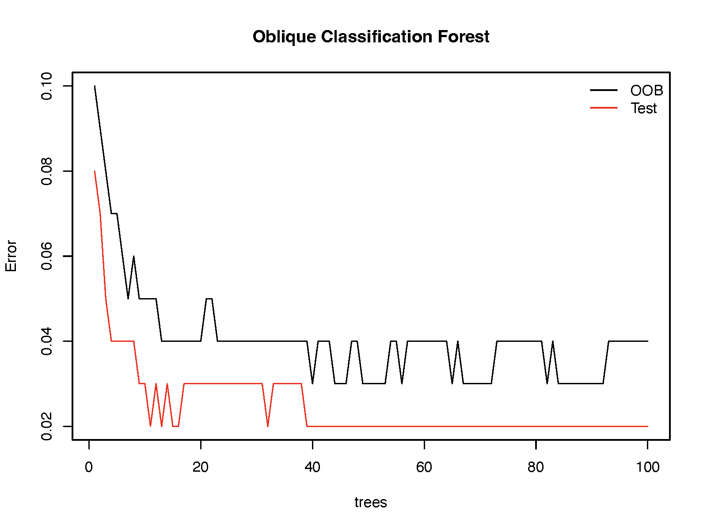
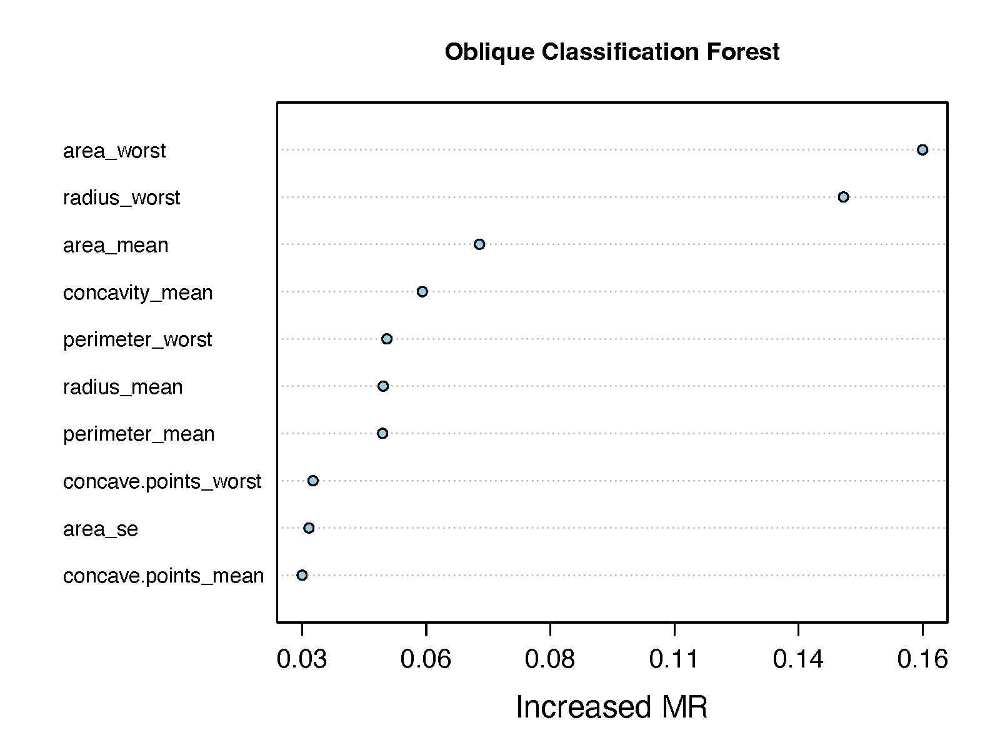
The plots are shown in Figure 3. The left panel is the plot of errors of ODRF against the number of trees. It can be seen that the errors of OOB and test data decrease with the number of trees and that the error of test data is bigger than the training data. The right panel is the dotchart of variable importance, the horizontal axis is the error of ODRF after removing one variable; the larger the error increases, the more important the variable is.
RotMat* and custom functionsODRF provides many ways to select the rotation directions \(\theta\)
in each nodes, including RotMatPPO(), RotMatRand() and RotMatRF().
The generated rotation matrix has three columns, the first column
(Variable) is variables to be projected, the second column (Number)
is the index of a projection, and the third column (Coefficient) is
the coefficient of the projection for the variable. Details can be found
by ?ODT and ?ODRF.
The default method for the projection of RotMatPPO() is
model = "PPR", projection pursuit regression from ppr() in stats
package (Friedman and Stuetzle 1981). Standard usage is as follows.
RotMatPPO(X, y, model = "PPR", dimProj, numProj, ...)
RotMatMake(X = NULL,y = NULL,RotMatFun = "RotMatPPO",PPFun = "PPO", ...)Here is one example.
set.seed(14)
X <- matrix(rnorm(1000), 200, 5)
y <- (X[,1]+X[,2])^2 + X[,4]-X[,5] + runif(200)
tree <- ODT(X, y, split = "mse", NodeRotateFun = "RotMatPPO",
paramList = list(model = "PPR", dimProj = 5, numProj = 1))
round(tree[["projections"]],2) X1 X2 X3 X4 X5
proj1 0.20 0.29 -0.09 0.63 -0.69
proj2 -0.69 -0.68 0.02 0.19 -0.16
proj3 -0.06 -0.09 0.16 0.72 -0.67
proj4 -0.57 -0.70 0.03 0.31 -0.29It can be seen that the projections are roughly parallel to those in the model, i.e. (1, 1, 0, 0, 0) and (0, 0, 0, 1, -1).
It is worth mentioning that the package allows users to define their
rotation matrix functions and link them with the function RotMatMake()
in the package. The first function, named, for example, makeRotMat(),
is to select the variables to be projected, with a specified format of
output, including the projection dimensions and the number of
projections (the first two columns of the rotation matrix):
makeRotMat <- function(dimX, dimProj, numProj, ...) {
RotMat <- matrix(1, dimProj * numProj, 3)
for (np in seq(numProj)) {
RotMat[(dimProj * (np - 1) + 1):(dimProj * np), 1] <-
sample(1:dimX, dimProj, replace = FALSE)
RotMat[(dimProj * (np - 1) + 1):(dimProj * np), 2] <- np
RotMat[(dimProj * (np - 1) + 1):(dimProj * np), 3] <-
sample(c(1L, -1L), dimProj, replace = TRUE, prob = c(0.5, 0.5))
}
return(RotMat)
}
set.seed(35)
RotMat1 <- makeRotMat(dimX = 5, dimProj = 3, numProj = 2)
RotMat1 [,1] [,2] [,3]
[1,] 2 1 -1
[2,] 5 1 -1
[3,] 1 1 -1
[4,] 5 2 1
[5,] 2 2 1
[6,] 4 2 -1The second function, named as, for example, makePP(), is defined to
estimate the projection coefficients (the third column of the rotation
matrix):
makePP <- function(X, y, ...) {
LM <- lm(y ~ ., data = data.frame(X,y=y))
theta <- as.matrix(LM[["coefficients"]])[-1, , drop = FALSE]
theta <- theta / sqrt(sum(theta^2))
return(theta)
}
set.seed(35)
RotMat3 <- RotMatMake(X = X, y = y, RotMatFun = "makeRotMat", PPFun = "makePP",
paramList = list(dimX = 5, dimProj = 3, numProj = 2))
RotMat3 Variable Number Coefficient
[1,] 2 1 0.4297059
[2,] 5 1 -0.9007557
[3,] 1 1 0.0631821
[4,] 5 2 -0.7227304
[5,] 2 2 0.2141932
[6,] 4 2 0.6571012Then, we put these functions as augments of NodeRotateFun and PPFun
respectively as follows.
set.seed(23)
tree <- ODT(X, y, split = "mse", NodeRotateFun = "RotMatMake", paramList =
list(RotMatFun = "makeRotMat", PPFun = "makePP", dimX = 5, dimProj = 5, numProj = 1))
round(tree[["projections"]], 2) X1 X2 X3 X4 X5
proj1 0.08 0.21 -0.11 0.69 -0.68
proj2 0.22 0.39 -0.16 0.69 -0.55
proj3 -0.27 -0.03 0.05 0.68 -0.68In this section, we first use ODT() to analyze two data sets and see
how it improves the analysis of CART, in terms of model complexity,
model fitting and variable importance. In the second example, we compare
the prediction performance of ODT and ODRF in ODRF with the other
popular methods using 43 real data sets, including 20 continuous
responses, 8 multinomial responses and 15 binary responses. All real
data analyses were conducted in R version 4.2.2 on a Windows 11
Operating System with AMD Ryzen 7 5800H with Radeon Graphics (16 CPUs),
3.2 GHz with 16 GB of memory.
The first dataset is the kyphosis data, which has 81 observations. The
data (kyphosis) are available at rpart. The response is \(kyphosis\)
with values ‘absent’ or ‘present’, indicating whether kyphosis (a type
of deformity) was present after surgery. The three predictors are (1)
\(age\): the age of the child in months; (2) \(number\): the number of
vertebrae involved; (3) \(start\): the number of the first (uppermost)
vertebra operated on. Below is the code and analysis.
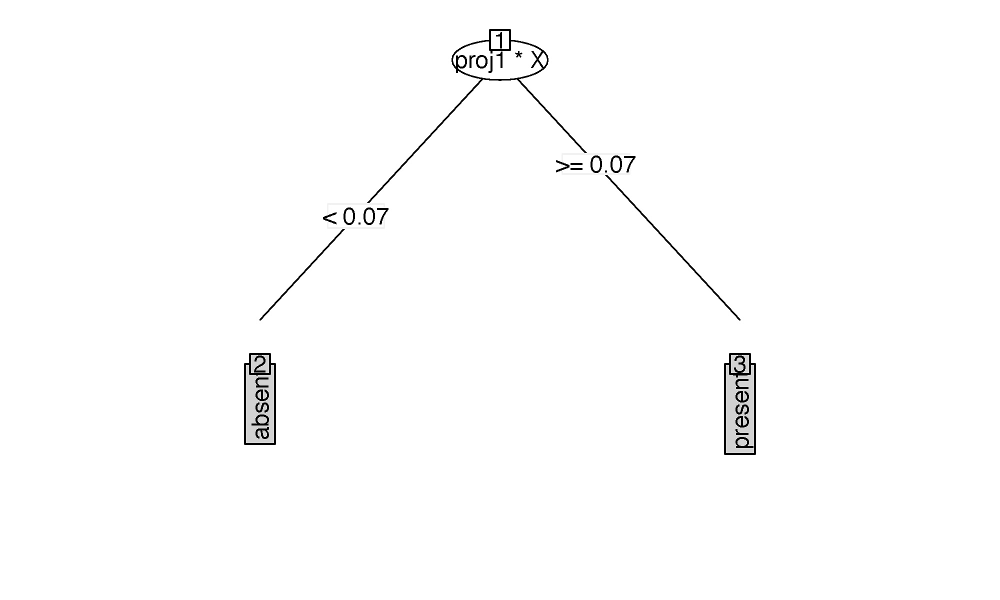
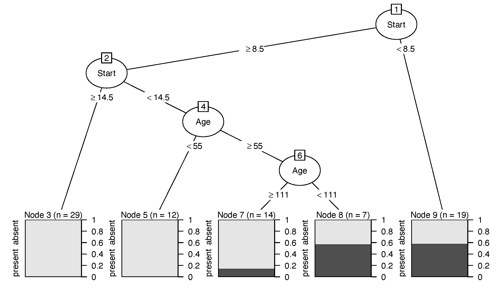
We first fit the data to ODT and CART, and calculate the fitted errors.
data(kyphosis, package = "rpart")
odt <- ODT(Kyphosis ~ Age + Number + Start, data = kyphosis, split = "gini",
paramList = list(model = "PPR", numProj = 1))
tree <- rpart(Kyphosis ~ Age + Number + Start, data = kyphosis, method = "class")
pred <- predict(odt, kyphosis[, -1])
e.odt <- mean(pred != kyphosis[, 1])
pred <- predict(tree, kyphosis, type = "class")
e.tree <- mean(pred != kyphosis[, 1])
print(c(e.odt = e.odt, e.tree = e.tree)) e.ODT e.CART
0.1604938 0.1604938print(round(odt[["projections"]], 3)) Age Number Start
proj1 0.31 0.596 -0.741The trees of ODT and CART are shown in Figure 4. We can see from the trees that ODT has a much smaller complexity, i.e. 2 leaves, than CART which has 5 leaves, but has the same fitted error as CART. There is only one projection for ODT with splitting variable \(0.310 \times \text{Age} + 0.596 \times \text{Number} - 0.74 \times \text{Start}\), which determines whether kyphosis will present or not after an operation.
The second data set is about the relative performance and
characteristics of 209 CPUs. This dataset contains the following
variables: \(syct\) (cycle time in nanoseconds), \(mmin\) (minimum main
memory in kilobytes), \(mmax\) (maximum main memory in kilobytes), \(catch\)
(cache size in kilobytes), \(chmin\) ( minimum number of channels),
\(chmax\) (maximum number of channels), \(perf\) (published performance on a
benchmark mix relative to an IBM 370/158-3), and \(estperf\) (estimated
performance by Ein-Dor & Feldmesser). This data (cpus) is available in
MASS. The interest is to
predict the \(perf\) using \(syct\), \(mmin\), \(mmax\), \(cach\), \(chmin\) and
\(chmax\). The logarithm transformation is made to \(perf\).
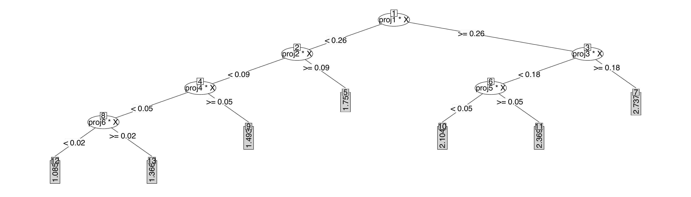
data(cpus, package = "MASS")
odt <- ODT(log10(perf) ~ syct + mmin + mmax + cach + chmin + chmax, data = cpus,
lambda = log(nrow(cpus)), split = "mse", paramList = list(model = "PPR", numProj = 1))
pred <- predict(odt, cpus[, 2:7])
e.odt <- mean((pred - log10(cpus[, 8]))^2)
tree <- rpart(log10(perf) ~ syct + mmin + mmax + cach + chmin + chmax, data = cpus)
pred <- predict(tree, cpus)
e.tree <- mean((pred - log10(cpus[, 8]))^2)
print(c(e.ODT = e.odt, e.CART = e.tree)) e.ODT e.CART
0.02297886 0.03034244 print(round(odt[["projections"]], 3)) syct mmin mmax cach chmin chmax
proj1 -0.047 0.546 0.586 0.553 0.206 0.094
proj2 -0.021 0.298 0.505 0.744 0.319 0.014
proj3 -0.963 0.125 0.181 0.121 0.010 0.101
proj4 -0.034 0.751 0.419 0.407 0.302 0.051
proj5 -0.982 -0.002 0.126 0.070 0.000 0.125
proj6 -0.012 -0.351 0.920 -0.156 0.061 -0.049The ODT and CART trees are depicted in Figure 5 and Figure 6, respectively. Once again, it is evident that ODT has fewer leaves and a lower fitting error than CART. Interestingly, the first, second, and fourth projections primarily relate to a computer’s memory and the time required to fetch data from main memory or disk storage (represented by \(mmin\), \(mmax\), \(catch\), \(chmin\)), as their coefficients have larger absolute values. Another group of projections, specifically the third and fifth, are associated with \(syct\), the time it takes a computer to complete one clock cycle, which can contribute to faster processing speeds and improved performance. In some special cases, \(mmax\) plays a role, i.e. projection 6, possibly when the data set is large. These projections correspond to the common understanding of the performance of a computer and its hardware settings. These examples show that ODT has better interpretability than CART.
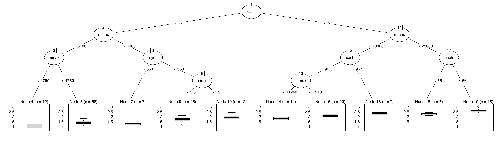
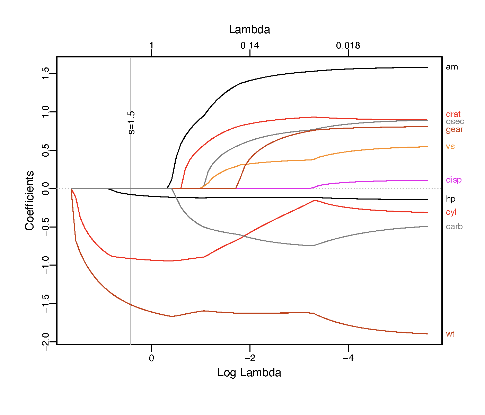
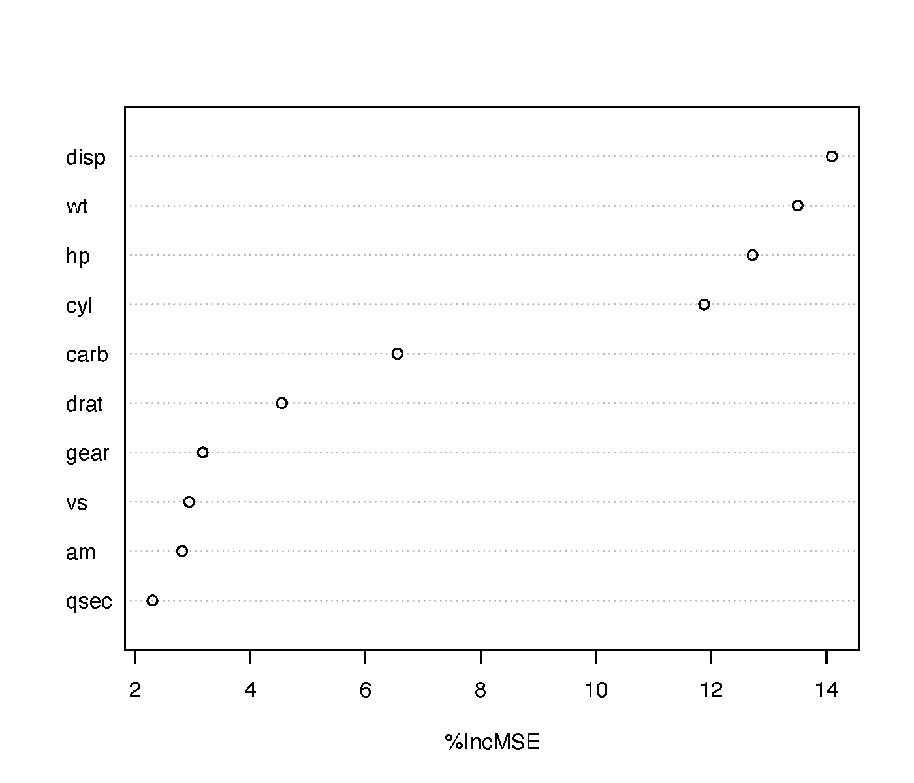
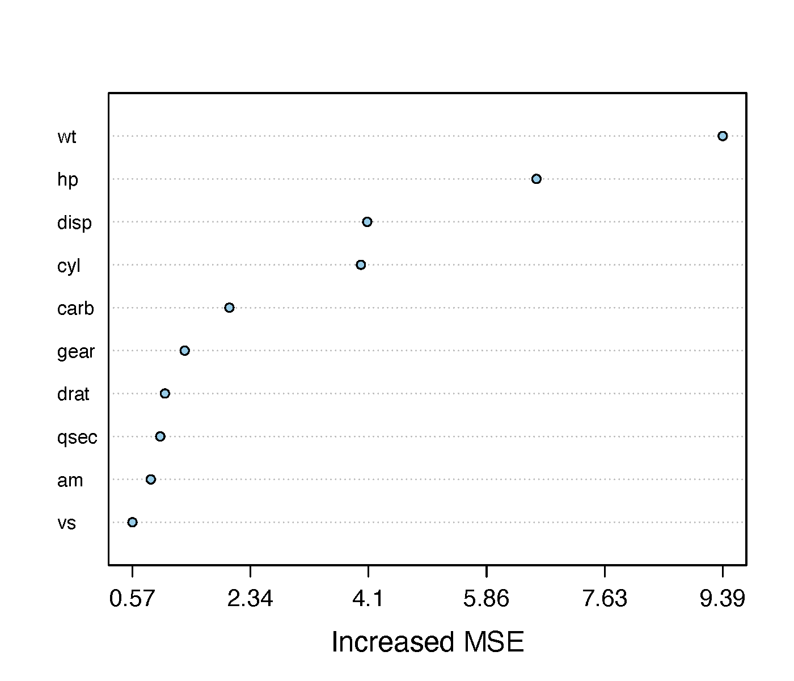
The data was extracted from the 1974 Motor Trend US magazine, and
comprises fuel consumption and 10 aspects of automobile design,
including mpg: Miles/(US) gallon, cyl: Number of cylinders, disp:
Displacement (cu.in.), hp: Gross horsepower, drat: Rear axle ratio, wt:
Weight (1000 lbs), qsec: 1/4 mile time, vs: Engine (0 = V-shaped, 1 =
straight), am: Transmission (0 = automatic, 1 = manual), gear: Number of
forward gears, and carb: Number of carburetors, and performance, which
is measured by the fuel consumption (mpg). This data (mtcars) is
available in datasets (Henderson and Velleman 1981). Our interest is
to explore which aspects of automotive design affect the performance
(mpg).
ODRF measures variable importance using a similar permutation method as RF. We will compare the rank of importance of ODRF with RF. In addition, LASSO is a popular variable selection method, so we use it as a benchmark. Figure 7 shows that ODRF ranks Weight (wt) as the most important factor affecting fuel consumption, which is consistent with the LASSO results. RF ranks Displacement (disp) as an important influencing factor, while the LASSO results show Displacement as the least influencing factor. Further comparison of the other variable rankings shows that our ODRF rankings of variable importance are generally consistent with LASSO, while RF differs more.
|
|
|||||||||
|---|---|---|---|---|---|---|---|---|---|---|
| Dataset | n | p | CART | ERT | EVT | CT | RotT | SPOT | PPT | ODT |
| Servo (C) | 166 | 4 | 0.298 | 0.812 | 0.257 | 0.300 | 0.770 | 0.563 | 0.387 | 0.306 |
| AutoMpg (C) | 391 | 7 | 0.213 | 0.314 | 0.217 | 0.192. | 0.281 | 0.245 | 0.184 | 0.175 |
| Concrete Compressive (A) | 1030 | 8 | 0.314 | 0.513 | 0.308 | 0.248 | 0.539 | 0.446 | 0.502 | 0.202 |
| Boston house price (A) | 506 | 13 | 0.275 | 0.458 | 0.294 | 0.275 | 0.439 | 0.379 | 0.262 | 0.261 |
| Wild blueberry yield (B) | 777 | 13 | 0.228 | 0.347 | 0.224. | 0.189 | 0.319 | 0.265 | 0.099 | 0.113 |
| Body fat (B) | 252 | 14 | 0.073 | 0.418 | 0.085 | 0.061 | 0.446 | 0.402 | 0.096 | 0.072 |
| Paris housing price (B) | 10000 | 16 | 0.021 | 0.370 | 0.005 | 0.000 | 0.761 | 0.662 | 0.006. | 0.000 |
| House sales in King County (B) | 21613 | 18 | 0.327 | 0.482 | 0.324 | 0.287 | 0.442 | 0.360 | 0.314 | 0.256 |
| Bar crawl (B) | 7590 | 21 | 0.323 | 0.498 | 0.326 | 0.297 | 0.499 | 0.429 | 0.326 | 0.280 |
| Auto 93 (C) | 81 | 22 | 0.620 | 0.927 | 0.706 | 0.602 | 0.753 | 0.683 | 0.707 | 0.599 |
| Auto horsepower (C) | 159 | 24 | 0.236 | 0.340 | 0.255 | 0.238 | 0.487 | 0.384 | 0.230 | 0.189 |
| Facebook comment volume (A) | 18370 | 52 | 0.700 | 1.210 | 0.756 | 0.717 | 0.971 | 0.846 | 0.841 | 0.743. |
| Gold price prediction (B) | 1718 | 74 | 0.043 | 0.023 | 0.023 | 0.016 | 0.136 | 0.029 | 0.027 | 0.010 |
| Baseball player statistics (B) | 4535 | 74 | 0.039 | 0.225 | 0.017 | 0.010 | 0.646 | 0.470 | 0.054 | 0.007 |
| CNNpred (A) | 1441 | 76 | 0.032 | 0.016 | 0.010 | 0.003 | 0.124 | 0.068 | 0.019 | 0.002 |
| Superconductivity (A) | 21263 | 81 | 0.296 | 0.387 | 0.293. | 0.287 | 0.332 | 0.309 | 0.323. | 0.271 |
| Warsaw flat rent price (B) | 3472 | 78 | 0.447 | 0.750 | 0.462 | 0.425 | 0.965 | 0.624 | 0.518 | 0.469 |
| Buzz in social media (A) | 28179 | 96 | 0.206 | 0.347 | 0.234 | 0.201 | 0.489 | 0.349 | 0.378 | 0.344. |
| Communities and Crime (A) | 1994 | 101 | 0.475 | 0.746 | 0.480 | 0.445 | 0.568 | 0.526 | 0.617 | 0.545. |
| Residential building-Sales (A) | 372 | 103 | 0.060 | 0.231 | 0.060 | 0.040 | 0.356 | 0.285 | 0.176 | 0.046 |
| Average RPE across all 20 datasets | 0.261 | 0.471 | 0.267 | 0.242. | 0.516 | 0.416 | 0.303 | 0.245. | ||
| No.~of bests in 20 datasets | 1 | 0 | 1 | 6 | 0 | 0 | 1 | 11 | ||
Next, we show the performance of ODT and ODRF as well. We use 20
real data sets with continuous responses and 23 data sets with
categorical responses for regression and classification respectively.
Our data are mainly obtained from the UCI machine learning database (A)
https://archive.ics.uci.edu/ml/datasets, the Kaggle database (B)
https://www.kaggle.com, and the Collection of Datasets of (Rainforth
and Wood 2015) (C) https://github.com/twgr/ccfs/. All data can also be
obtained directly from https://github.com/liuyu-star/RJ_ODRF_Codes. If
there are any missing values in the data, the corresponding observations
are removed from the data. We scale the predictors individually before
performing the calculation. Although this makes no theoretical
difference, it sometimes enhances computational stability and
facilitates variable importance ranking.
The estimation methods of the coefficients of these projections include random projection, logistic regression, dimension reduction and many others. However, our experiments suggest that these estimations actually make little difference in the results. In our calculation, instead of using one single projection or linear combination, we provide a number of projections, each of which is for the projection of a set of randomly selected predictors, and then use Gini impurity or residual sum of squares to choose one combination as splitting variable and splitting point. The logistic regression function is used to find projections for each combination of predictors, but other alternatives are also provided in the package.
| Axis-aligned | Oblique | ||||||||||
|---|---|---|---|---|---|---|---|---|---|---|---|
| Dataset | n | p | CART | ERT | EVT | CT | RotT | SPOT | PPT | OT | ODT |
| Iris (A, 3) | 149 | 4 | 6.96 | 21.58 | 7.08 | 5.98 | 14.74 | 15.20 | 2.66 | 4.24 | 5.70 |
| Seeds (C, 3) | 209 | 7 | 9.66 | 16.24 | 10.94 | 12.39 | 13.29 | 14.26 | 4.27 | 5.30 | 6.93 |
| Milk Quality (B, 3) | 1059 | 7 | 2.05 | 37.92 | 6.29 | 1.31 | 4.87 | 8.64 | 29.56 | 0.80 | 2.22 |
| Breast tissue (C, 6) | 105 | 9 | 36.37 | 47.23 | 38.74 | 42.66 | 57.69 | 59.23 | 33.63 | 39.23 | 55.26 |
| Penguin (B, 3) | 333 | 9 | 6.61 | 12.47 | 3.96 | 6.50 | 7.25 | 14.12 | 0.63 | 0.97 | 2.14 |
| Wine (A, 3) | 177 | 13 | 12.53 | 18.49 | 10.10 | 12.00 | 18.86 | 18.56 | 2.27 | 4.42 | 7.02 |
| Mobile Price (B, 4) | 2000 | 20 | 20.60 | 46.89 | 21.91 | 17.34 | 64.98 | 62.51 | 16.14 | 4.16 | 3.89 |
| Waveform (C, 3) | 4999 | 21 | 26.52 | 31.89 | 26.62 | 26.27 | 28.68 | 27.96 | 22.28 | 21.06 | 18.22 |
| Gamma telescope (A,2) | 579 | 10 | 32.01 | 33.90 | 30.41 | 29.64 | 30.33 | 30.65 | 37.30 | 33.50 | 32.24 |
| Indian liver patient (A,2) | 19020 | 10 | 18.19 | 26.44 | 19.50 | 19.21 | 22.00 | 21.45 | 20.92 | 21.02 | 18.83 |
| Heart disease (A,2) | 270 | 13 | 21.91 | 28.38 | 23.04 | 25.28 | 25.39 | 25.22 | 16.20 | 23.34 | 20.61 |
| EEG eye state (A,2) | 14980 | 14 | 29.98 | 36.15 | 30.90 | 36.27 | 34.36 | 33.29 | 38.19 | 27.44 | 25.76 |
| Seismic-bumps (A,2) | 2584 | 15 | 7.61 | 9.60 | 6.64 | 6.62 | 6.93 | 6.88 | 18.35 | 10.43 | 8.34 |
| Retinopathy debrecen (A,2) | 1151 | 19 | 35.89 | 40.55 | 35.43 | 37.03 | 38.25 | 35.40 | 29.37 | 32.71 | 30.20 |
| Parkinson multiple sound (B,2) | 1208 | 26 | 34.39 | 38.69 | 34.81 | 37.10 | 36.49 | 35.74 | 35.23 | 36.84 | 34.88 |
| Pistachio (B,2) | 2148 | 28 | 13.73 | 18.10 | 14.20 | 14.38 | 16.64 | 15.38 | 11.75 | 12.16 | 10.55 |
| Breast cancer (B,2) | 569 | 30 | 7.07 | 9.28 | 6.62 | 6.34 | 8.55 | 8.23 | 4.41 | 6.16 | 3.91 |
| Ionosphere (A,2) | 351 | 33 | 12.40 | 18.38 | 11.14 | 10.22 | 17.01 | 16.27 | 13.92 | 16.26 | 12.21 |
| QSAR biodegradation (A,2) | 1055 | 41 | 17.88 | 20.61 | 18.10 | 19.65 | 20.41 | 19.41 | 15.52 | 19.64 | 17.14 |
| Mice protein expression (A,2) | 1047 | 70 | 13.60 | 18.31 | 16.80 | 13.93 | 20.68 | 19.03 | 3.58 | 4.62 | 6.03 |
| Ozone level detection (A,2) | 1847 | 72 | 8.16 | 9.94 | 7.00 | 7.51 | 8.15 | 8.28 | 19.40 | 11.85 | 8.43 |
| Hill valley (C,2) | 1212 | 100 | 48.22 | 46.07 | 48.43 | 51.41 | 41.56 | 22.53 | 29.90 | 13.84 | 0.04 |
| Musk (A,2) | 6598 | 166 | 8.61 | 12.02 | 11.48 | 9.39 | 13.18 | 11.49 | 7.73 | 10.96 | 9.34 |
| Average MR (%) across all 23 datasets | 18.74 | 26.05 | 19.14 | 19.50 | 23.93 | 23.03 | 17.97 | 15.69 | 14.78 | ||
| No. of bests in 23 datasets | 2 | 0 | 1 | 3 | 0 | 0 | 10 | 1 | 6 |
We compare two different random rotation oblique tree methods: the
Random Rotation Random Forest (RotRF) proposed by (Blaser and Fryzlewicz
2016), and Sparse Projection Oblique Randomer Forests (SPORF) proposed
by (Tomita et al. 2020). Note that the trees in SPORF and
RotRF are all random, but we still use one of the trees, denoted by RotT
and SPOT respectively, for the comparison of different trees. In
addition, there are two oblique decision tree methods used for
classification: projection pursuit classification and regression trees
(PPT) of (Lee 2018; Cho and Lee 2021) with
PPtreeViz and
PPtreereg packages;
and Oblique Trees for Classification Data (OT) of (Truong 2009) with
function oblique.tree() in
oblique.tree
package. We also compare four axis-aligned tree methods, including CART
with function rpart() in
rpart package, ERT with
function RLT() in RLT
package, EVT with function evtree() in
evtree package, and CT
with function ctree() in
partykit package. For
all the R functions, their default values of tuning parameters are used.
Note that we only report the classification results because OT cannot be
used for regression. For the forests, the competitors include RotRF with
function rotationForest() in
rotationForest
package, SPORF with function RerF() in
rerf package, RF with
function randomForest() in
randomForest
package, GRF with functions regression_forest() and
Classification_forest() in package
grf, extreme gradient
boosting (XGB) of (Chen and Guestrin 2016) with function xgboost() in
xgboost package, ORF
with function obliqueRF() in
obliqueRF package,
ORSF with function orsf() in
aorsf package, and PPF
with function PPforest() in
PPforest package. We
used the default tuning parameter values for all packages; however, we
used 100 trees for the ensemble methods. All datasets and codes used in
the paper are publicly accessible at
https://github.com/liuyu-star/RJ_ODRF_Codes. The results presented in
the paper can be reproduced by running R script "ODRF.R".
For each data set, we randomly partition it into a training set and a test set. The training set consists of \(n=\min(\lfloor 2N/3\rfloor ,1000)\) randomly selected observations, where \(N\) is the number of observations in the original data sets, and the remaining observations form the test set. For regression, the relative prediction error defined as \[RPE=\sum_{i\in \text{test set}}(\hat{y}_i-y_i)^2/\sum_{i\in \text{test set}}(\bar{y}_{\text{train}}-y_i)^2,\] where \(\bar{y}_{\text{train}}\) is a naive prediction based on the average of \(y\) in the training sets, is used to measure the performance of a method. For classification, the misclassification rate, defined as \[MR=\sum_{i\in \text{test set}} 1(\hat{y}_i \neq y_i) /(N-n),\] is used to measure the performance. For each data set, the random partition is repeated 100 times, and averages of the RPEs or MRs are calculated using different methods. The calculation results are listed in Table 1 and Table 2. The smallest RPE or MR for each data set is highlighted in font.
By comparing prediction errors across tasks, our Oblique Decision Tree (ODT) method shows strong performance in regression, with generally lower Relative Prediction Error (RPE) than competing methods. For classification tasks, ODT achieves competitive misclassification rates (MR) on certain datasets, though its performance varies relative to other approaches such as PPT. ODT consistently demonstrates stability across all data sets, as shown in Table 1 and Table 2. In contrast, other oblique trees may fail; for instance, RotT and SPOT fail in the body fat data and Paris housing price data, while all other oblique trees fail in the Hill Valley data. The efficacy of ODT is further supported by having the lowest average RPEs (or MRs) across all data sets among all methods. Here, the term "no. of bests" refers to the number of data sets in which a particular method outperforms all competitors.
| Classification | Regression | ||||||
|---|---|---|---|---|---|---|---|
| Type | Method | MR (%) | Time | Complexity | RPE | Time | Complexity |
| Axis-aligned tree | CART | 21.32 (0) | 0.11 (0) | 11.40 (0) | 0.241 (0) | 0.08 (1) | 8.20 (9) |
| ERT | 23.05 (0) | 0.00 (13) | 91.67 (0) | 0.514 (0) | 0.00 (18) | 185.90 (0) | |
| EVT | 20.24 (2) | 0.57 (0) | 6.33 (1) | 0.262 (0) | 0.78 (0) | 10.35 (10) | |
| CT | 21.75 (2) | 0.16 (0) | 9.00 (1) | 0.224 (7) | 0.42 (0) | 24.45 (1) | |
| Oblique tree | RotT | 15.49 (4) | 0.13 (1) | 9.53 (0) | – | – | – |
| SPOT | 20.70 (0) | 0.05 (1) | 63.20 (0) | – | – | – | |
| OT | 18.41 (2) | 11.19 (0) | 25.60 (2) | – | – | – | |
| PPT | 21.39 (1) | 0.16 (0) | 2.00 (11) | 0.274 (1) | 1.580 (0) | 14.45 (1) | |
| ODT | 16.36 (4) | 0.14 (0) | 14.13 (0) | 0.210 (13) | 0.32 (1) | 40.30 (0) | |
| Axis-aligned forest | RF | 16.60 (1) | 0.14 (1) | – | 0.156 (2) | 0.59 (1) | – |
| GRF | 17.97 (2) | 0.06 (12) | – | 0.196 (0) | 0.03 (17) | – | |
| ERT | 16.62 (0) | 0.17 (2) | – | 0.191 (1) | 0.24 (2) | – | |
| XGB | 18.70 (0) | 0.17 (0) | – | 0.142 (9) | 0.35 (0) | – | |
| Oblique forest | RotRF | 13.43 (1) | 10.24 (0) | – | – | – | – |
| SPORF | 13.29 (3) | 2.71 (0) | – | – | – | – | |
| PPF | 21.27 (2) | 1.16 (0) | – | – | – | – | |
| ORF | 12.60 (3) | 11.84 (0) | – | – | – | – | |
| ORSF | 13.02 (0) | 2.51 (0) | – | 0.178 (3) | 0.14 (0) | – | |
| ODRF | 12.90 (3) | 9.90 (0) | – | 0.142 (8) | 38.86 (0) | – |
We also provide a comprehensive summary of three performance aspects for all competing methods: prediction error (MR for classification tasks or RPE for regression tasks), calculation time (Time), and the number of terminal nodes (Complexity). For \(n\) training samples and \(p\) predictors, the ODT algorithm demonstrates higher computational complexity in the training phase compared to CART (which typically has \(O(p \cdot n \log n)\) complexity) due to the overhead of linear optimizations, such as covariance matrix estimation and eigenvalue decomposition, though heuristic approaches like depth constraints can mitigate this cost. In the prediction phase, ODT requires \(O(p \cdot \log n)\) time per sample, as each node involves a linear combination computation, whereas CART achieves \(O(\log n)\) time by relying on single-variable splits without linear operations.
Due to rotationForest and obliqueRF packages only supporting binary classification problems, Table 4 presents the average values for these three aspects based on 15 binary classification datasets and 20 regression datasets. As shown in Table 4, after removing the five multinomial datasets, our ODT and ODRF generally exhibit smaller errors compared to their competitors. For ODT, its complexity and calculation time are approximately average among the other methods, yet it demonstrates reduced errors. ODRF significantly reduces prediction error compared to its competitors, as well as other oblique forests including ODT. However, the calculation time for ODRF is considerably longer than that of traditional random forests, while being comparable to other oblique forests.
Finally, we evaluated the performance of ODRF and other methods under three noise conditions using six classification datasets, followed by a comparative analysis without noise conditions. Specifically: irrelevant features noise was applied to the Iris and Penguin datasets; label noise was applied to the Patient and Retinopathy datasets; correlated features noise was applied to the QSAR and Musk datasets. The three noise conditions are defined as follows:
Add label noise Let \(y \in \{0,1\}^n\) be a binary label vector, and \(\epsilon \in [0,1]\) be the noise rate (In the computation, it is set to 0.1). Randomly select a subset of indices \(S \subseteq \{1, 2, \dots, n\}\) of size \(m = \lfloor n \epsilon \rfloor\). Then, the noisy label vector \(y'\) is defined as: \[y'_i = \begin{cases} 1 - y_i & \text{if } i \in S \\ y_i & \text{otherwise} \end{cases}\] where \(S\) is uniformly randomly sampled from \(\{1, \dots, n\}\) and \(|S| = m\).
Add irrelevant features noise. Let \(X \in \mathbb{R}^{n \times p}\) be the original feature matrix. Add \(q \in \mathbb{N}\) (In the computation, it is set to 10) irrelevant features by generating a random matrix \(Z \in \mathbb{R}^{n \times q}\), where each element \(Z_{ij} \sim \mathcal{N}(0, 1)\) is independently and identically distributed (i.i.d.). The augmented feature matrix is: \[X' = \begin{bmatrix} X & Z \end{bmatrix}\]
Add correlated features noise. Let \(X \in \mathbb{R}^{n \times p}\) be the original feature matrix, and \(x^{(k)} \in \mathbb{R}^n\) be its \(k\)-th column vector. Given a target correlation coefficient \(\rho \in [-1,1]\) (In the computation, \(k=1\) and \(\rho=0.9\)), add a new feature \(z \in \mathbb{R}^n\) such that: \[z = \rho x^{(k)} + \delta, \quad \delta \sim \mathcal{N}(0, \sigma^2), \quad \sigma^2 = 1 - \rho^2\] where \(\delta\) is independent of \(x^{(k)}\). The augmented feature matrix is: \[X' = \begin{bmatrix} X & z \end{bmatrix}\] In our computational experiments, noise was introduced to only one correlated feature. Alternatively, the introduction of noise to multiple correlated features could be considered for further analysis.
We have computed the corresponding results as detailed in Table 5. It can be observed that our ODRF is less sensitive to noisy data compared to other methods and even demonstrates enhanced performance in the presence of noise, as illustrated by the Patient and QSAR datasets.
| Without noise | With noise | |||||||||||
|---|---|---|---|---|---|---|---|---|---|---|---|---|
| Dataset | n | p | CART | SPOT | PPT | OT | ODT | CART | SPOT | PPT | OT | ODT |
| Iris (A, 3) | 149 | 4 | 6.96 | 14.74 | 2.66 | 4.24 | 5.76 | 6.96 | 31.42 | 3.90 | 7.24 | 6.18 |
| Penguin (B, 3) | 333 | 9 | 6.61 | 13.18 | 0.63 | 0.97 | 2.11 | 6.61 | 15.29 | 0.70 | 1.39 | 2.59 |
| Patient (A, 2) | 19020 | 10 | 18.19 | 21.44 | 20.92 | 21.05 | 25.46 | 28.15 | 27.11 | 32.03 | 27.76 | 18.94 |
| Retinopathy (A, 2) | 1151 | 19 | 35.89 | 35.35 | 29.37 | 32.76 | 29.88 | 39.51 | 39.61 | 33.90 | 39.59 | 36.57 |
| QSAR (A, 2) | 1055 | 41 | 17.89 | 19.52 | 15.52 | 19.69 | 17.11 | 18.00 | 19.64 | 15.62 | 19.92 | 16.99 |
| Musk (A, 2) | 6598 | 166 | 8.61 | 11.71 | 7.73 | 10.96 | 9.53 | 8.60 | 11.53 | 7.72 | 11.07 | 9.67 |
The Oblique Decision Tree (ODT) has been touted as superior to the conventional CART, but it has lacked theoretical justification, and its numerical benefits have not been supported by existing packages. Our recent work (Zhan et al. 2025) provides the first theoretical proof of ODT’s superiority over CART for a wider range of regression functions, as long as they are continuous, ensuring consistency; similarly, ODRF demonstrates advantages over conventional Random Forests. Building on this theoretical insight, we developed the ODRF package and found that, as demonstrated in this paper, ODT and ODRF indeed deliver more accurate predictions with fewer leaves, resulting in lower model complexity and enhanced interpretability for data analysis. Furthermore, we propose an enhanced ODT-based boosting ensemble (ODBT) whose performance parallels ODRF, with detailed computational proofs available in our recent work.
Despite these advantages, ODRF and ODT may not perform optimally in certain scenarios. For instance, they can struggle with small datasets due to insufficient data for effective oblique splits, exhibit reduced efficiency with highly redundant features that dilute the impact of linear combinations, and face challenges with special data structures (e.g., highly imbalanced classes or non-linear relationships not captured by oblique projections). Additionally, we acknowledge limitations in the current implementation. The package experiences performance bottlenecks with large-scale datasets due to the computational overhead of oblique splits, and dependency management requires refinement to ensure robust installation across different environments. The current work also lacks certain preprocessing capabilities and needs expansion to handle diverse data types, such as automated feature engineering or support for complex data formats. Future work will address these limitations by optimizing computational efficiency, enhancing preprocessing features, and extending support for challenging data conditions.
We are grateful to the Editor-in-Chief, Executive Editor and three referees for their meticulous review and valuable comments. Yu Liu is supported by the National Natural Science Foundation of China (12501377) and Sichuan Science and Technology Program (2026NSFSC0788). Yingcun Xia is supported by the National Natural Science Foundation of China (72033002 and 12271081).
Supplementary materials are available in addition to this article. It can be downloaded at RJ-2026-041.zip
ODRF, Rcpp, hhcartr, rpart, randomForest, rerf, PPforest, obliqueRF, partykit, MASS, PPtreeViz, PPtreereg, oblique.tree, RLT, evtree, rotationForest, grf, xgboost, aorsf
CausalInference, Databases, Distributions, Econometrics, Environmetrics, HighPerformanceComputing, MachineLearning, MissingData, MixedModels, ModelDeployment, NumericalMathematics, Psychometrics, Robust, Survival, TeachingStatistics
This article is converted from a Legacy LaTeX article using the texor package. The pdf version is the official version. To report a problem with the html, refer to CONTRIBUTE on the R Journal homepage.
Text and figures are licensed under Creative Commons Attribution CC BY 4.0. The figures that have been reused from other sources don't fall under this license and can be recognized by a note in their caption: "Figure from ...".
For attribution, please cite this work as
Liu & Xia, "The R Journal: ODRF: An R Package for Oblique Decision Tree and Its Random Forest", The R Journal, 2026
BibTeX citation
@article{RJ-2026-041,
author = {Liu, Yu and Xia, Yingcun},
title = {The R Journal: ODRF: An R Package for Oblique Decision Tree and Its Random Forest},
journal = {The R Journal},
year = {2026},
note = {https://doi.org/10.32614/RJ-2026-041},
doi = {10.32614/RJ-2026-041},
volume = {18},
issue = {3},
issn = {2073-4859},
pages = {1}
}